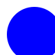
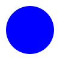

1. cirkel-svg uden xml
indsat direkte i html
indsat direkte i html
indsat direkte i html som img-tag


farver sat i svg
baggrundslag i svg med farve
farver sat på gruppen i svg'en, samt på en baggrundslag
Filstien finder SVG-filen, og #cirkel vælger symbolets id.
Åbn siden via en lokal webserver, fx Live Server.